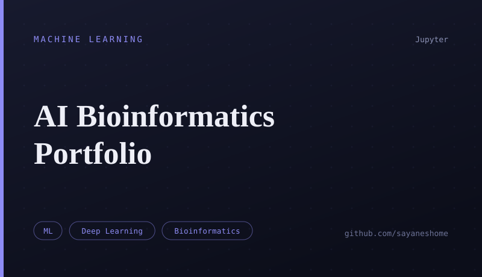

ML
github.com/sayaneshome/ai-bioinformatics-portfolio ↗
AI Bioinformatics Portfolio
A curated portfolio of my example work: single-cell RNA-seq and RNA-velocity (Scanpy), bulk RNA-seq differential expression with interaction terms, multi-omics correlation networks, and a diffusion-model demo — plus links to deployed apps.
scRNA-seqBulk RNA-seqNetworks
</> view codenotebooks/Notebook03.ipynb
library(DESeq2)
library(tibble) # For tidy data handling
# Assuming 'metadata' is your metadata DataFrame and 'countData1' is your count matrix
# First, make sure 'countData1' has the correct row names (genes) and column names (samples)
rownames(countData1) <- countData1$Gene_name
countData1 <- countData1[, -1] # Remove the 'Gene_name' column
# Make sure the 'metadata' DataFrame is correctly ordered to match the samples in 'countData1'
# The order should match exactly with the column names of 'countData1'
metadata_ordered <- metadata[match(colnames(countData1), metadata$id), ]
# Create a DESeqDataSet
# Assuming 'metadata_ordered' now has the columns in the correct order: 'sample', 'id', 'genotype', 'condition'
# The 'design' formula you have can stay the same
dds <- DESeqDataSetFromMatrix(countData = countData1,
colData = DataFrame(metadata_ordered),
design = ~ genotype + condition + genotype:condition)
# At this point, 'dds' should have 'genotype' and 'condition' correctly aligned
# You can proceed with your DESeq2 analysis workflow